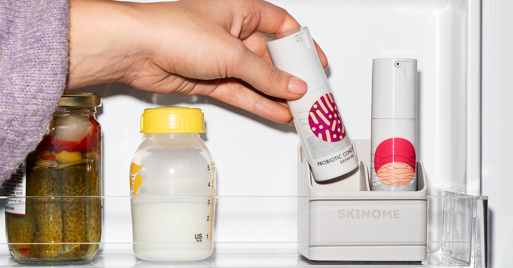

En strategisk läsning av Skinome genom fyra av Simon Sineks ramverk — Golden Circle, Customer Loss Decoder, Infinite Game och Loyalty Architecture — som landar i en enda övertygelse att bygga hela varumärket på.

De flesta hudvårdsmärken kommunicerar utifrån och in: vad de säljer, hur det skiljer sig, och aldrig varför de finns. Skinome har en sällsynt gåva — en grundare vars Varför föregår företaget med tjugo år. Här är den, i rätt ordning.
Ja. En person som redan misstror ”dödar 99,9 % av bakterierna”-logiken, som läser varje innehållsförteckning, som ser hud som hälsa snarare än fåfänga — dras magnetiskt till ett varumärke som öppnar med ”din hud är levande” innan det ens nämner en kräm. De känner sig inte sålda på; de känner sig igenkända. Det är hela poängen.
Kunder lämnar sällan på grund av pris eller konkurrens. De lämnar för att Varför:et aldrig gjordes tydligt nog för att få dem att stanna. För Skinome är både övertygelsen och produkten starka — men varumärket leder ofta med det andra, inte det första.
Utifrån och in. Varumärket tenderar att öppna med Vad och Hur — ”färsk, konserveringsfri, kallförvarad svensk hudvård.” Allt sant, allt imponerande. Men det leder med mekaniken, så kylen landar som ett krav innan övertygelsen förtjänat det.
Kunder tror att Skinome står för ”premium ren hudvård som är lite krävande.” Det står egentligen för ”din hud är levande och värd att skydda.” Gapet förvandlar tyst en övertygelse till ett besvär.
Brottet kommer vid ombeställningen, runt tre månader in. Om kunden aldrig internaliserat övertygelsen — kall för att den lever — då läses den korta hållbarheten och kylen som kostnad och besvär, och en hyllstabil konkurrent ser plötsligt ”enklare” ut. Produkten misslyckades inte. Meningen installerades aldrig.
Ändliga spelare spelar för att vinna. Oändliga spelare spelar för att fortsätta spela. Skinome bygger tyst en oändlig tillgång — en 20-årig sak, ett kliniskt partnerskap, ett utbildningsuppdrag — samtidigt som energin läggs på ett ändligt löpband: paid social-auktionen.
Inte en fiende — en lärare. The Ordinary vann en rörelse på radikal transparens och ägd utbildning, och förvandlade innehålls-ärlighet till evangelism med knappt någon betald media. Deras styrka blottar Skinomes lucka: Skinome har en bättre grundar-vetenskaplig historia men underutnyttjar den som ackumulerande ägd media, och lutar sig mot betald anskaffning istället. Slå dem på deras egen plan — ni har den djupare sanningen.
Det oändliga skiftet, med start idag: byt norrstjärna från ”nya kunder detta kvartal” till övertygelse-alignade kunder som stannar (prenumerantretention & LTV). Förbind er sedan till en ägd, ackumulerande tillgång — mikrobiom-utbildningsmotorn (ordlista, quiz, grundarfilm) — och gör betalt till dess förstärkare, inte dess livsnerv.
Målet är aldrig att göra affärer med alla som behöver en fuktkräm — det är att göra affärer med människor som tror på det ni tror. Här är arkitekturen som får rätt människor att stanna för alltid.
Din hud är ett levande ekosystem — hälsa, inte fåfänga. Skydda livet på din hud istället för att skrubba, strippa och sterilisera bort det. Alla som redan bär denna övertygelse är Skinome-kunder innan de ens hört namnet.
Paid social drar en bred ”clean/naturlig”-shoppare — vissa pris-drivna, trend-drivna, och snabba att lämna vid kylen. Den övertygelse-alignade publiken är smalare och långt mer lojal: känslig-hud-drabbade, innehållsläsare, de hälso-holistiska och vetenskapsnyfikna, som ser kylen som bevis och ombeställningen som ritual.
Kylen är den enskilt mest ägbara övertygelse-signalen i hela kategorin. Ingen hyllstabil konkurrent kan kopiera den utan att överge sin egen modell. Gör ”håll den kall, för att den lever” till tresekunderssignalen som säger till en innehållsläsare att de hittat sitt folk.
En annons och landningssida som öppnar med ”din hud är levande” och visar kylen som bevis — inte en produktbild med rabatt. Innehållsläsaren känner sig förstådd på tre sekunder.
Rama in ~3-veckorsfönstret som att återställa ett ekosystem — en trädgård, inte en strömbrytare. Sätt förväntan, fira mikrobiomet som återhämtar sig, så att resultaten tillskrivs övertygelsen.
Ge de troende orden och en anledning att dela: ”jag har min hudvård i kylen”-identitetssignalen plus en tvåsidig referral och trädet-per-köp som en altruistisk krok.
Allt ovan kokar ner till en enda instruktion: sätt Varför:et framför Vad:et — överallt, varje gång.
Skriv om hjärtat på skinome.com och de främsta betalda annonserna så att de öppnar med ”din hud är levande”, kylen som bevis — inte funktioner.
Rama om kylen & 3-månaders hållbarhet på sajten och i unboxing från regel → bevis på liv.
Välj en ägd utbildningstillgång (quiz / ordlista / grundarfilm) och resurssätt den som den ackumulerande motorn.
Byt den rapporterade norrstjärnan till prenumerantretention & LTV — övertygelse-alignade kunder som stannar.